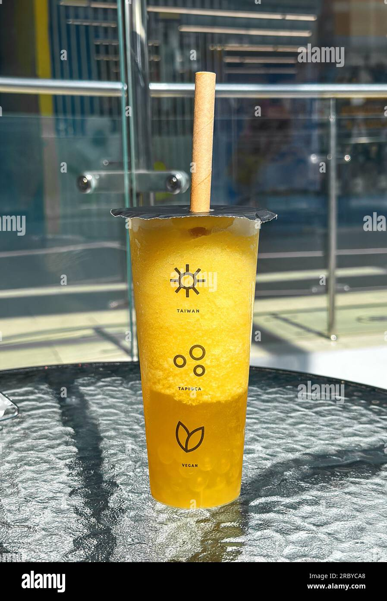
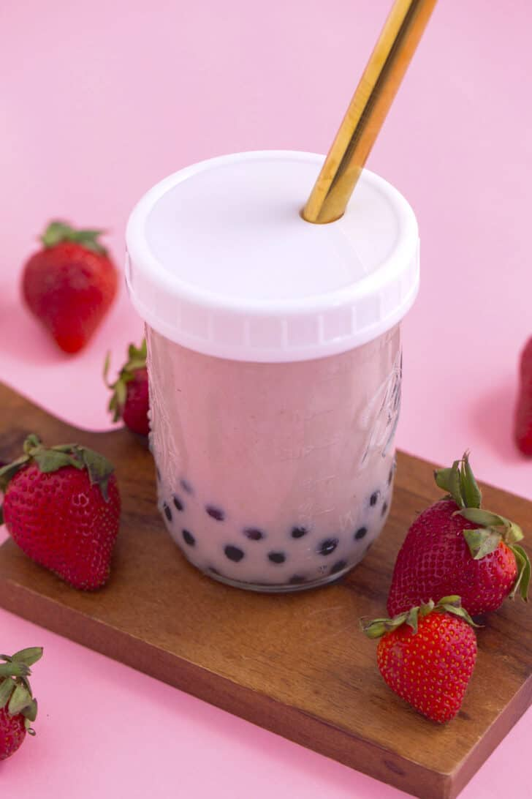

Pinaple tapioca drink
La tapioca está de moda y en esta versión sabor PIÑA COLADA hecha con CARNATION® CLAVEL® Base Coco, se volverá una de tus favoritas.

Strawberry tapica drink
Esta receta de yoghurt de fresa con tapioca es deliciosa ya que tiene las ricas perlitas de tapioca cocinadas con leche y canela

Matcha taioca drink
Delicioso té con bolitas de textura gelatinosa, o perlas de tapioca, similares a una gominola, puedes tomarlo frío aún será mas sabroso.